Entretien
Cracovie
2014
L'exposition L’Évidence Du Signe: Affiches, Livres & Identités, présentée du 2 décembre 2014 au 31 janvier 2015 à la Petite Galerie du Bel Ordinaire à Pau, retrace le parcours d’un designer d’exception au travail minimaliste, véritable quête simultanée de réduction des moyens visuels d’expression et d’efficacité du sens. Władysław Pluta (1949), designer graphique et enseignant du Département Design Industriel de l’Académie des Beaux-Arts de Cracovie, a su développer une écriture qui lui est propre basée sur un usage exclusif de la typographie, à la fois clairement ancrée dans le modernisme et capable de se renouveler à travers chaque contexte de projet, et ce, aux antipodes de l’image communément admise de «l’École Polonaise». Le signe typographique, trop souvent utilisé comme une image gratuite dans une fascination formelle stérile, devient dans la méthodologie de travail de Władysław Pluta une solution faisant sens et appel à l’intelligence de chacun.
De son projet de diplôme au début des années 1970 qui constitue une clé de lecture de l’ensemble de son oeuvre [1], à la découverte de ses affiches et logotypes à l’efficacité exemplaire en passant par son approche structurelle de la conception de livres, cette exposition permettra d’apprécier la continuité méthodologique de sa production quelque soit le champ du design graphique abordé.
Personnage discret volontairement en retrait de la scène médiatique, Władysław Pluta est aussi un pédagogue hors pair qui a toujours fait le choix d’un engagement continu depuis plus de quarante ans dans la promotion et la transmission du design graphique en Europe. L’entretien inédit suivant, qui s’est déroulé à Cracovie durant l’été 2014 avec cette grande figure du design européen largement méconnue en France, nous éclaire plus précisément sur sa démarche globale.
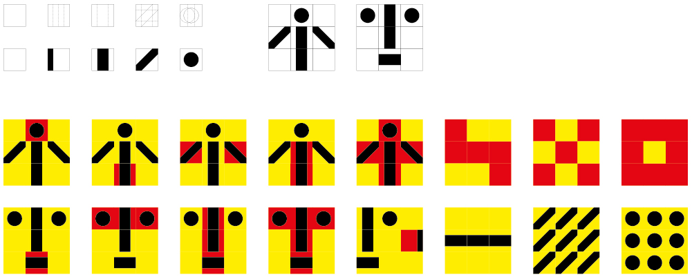
Où avez-vous suivi vos études, à quelle époque et comment avez-vous commencé votre pratique professionnelle à la fois de commande et d’enseignement?
Władysław Pluta
J’ai étudié de 1968 à 1974 à la Faculté de Design Industriel de l’Académie des Beaux-Arts de Cracovie / ASP et présenté un travail de fin d’études au sein du Département Communication Visuelle. Juste après l’obtention de mon diplôme, j’ai bénéficié d’un poste d’enseignant assistant et en parallèle j’ai commencé ma carrière en tant que designer graphique indépendant, nous parlions à l’époque de «conception graphique appliquée».
Dans le système communiste jusqu’en 1990 en Pologne, était-il possible de travailler comme créateur indépendant? Par rapport à votre propre expérience, quelles ont été les répercussions d’un tel régime dans le domaine de la création?
WP
Il était possible de travailler de manière indépendante mais les projets émanaient exclusivement de structures gouvernementales. Ces institutions organisaient souvent des concours publics — ce qui a ouvert la voie à de jeunes designers en quête de commandes et souhaitant se construire un nom. Durant l’ère communiste en Pologne, la conception d’affiche avait un statut particulier car elle était souvent utilisée dans le cadre de la propagande politique. De nombreuses expositions d’affiches était alors organisées telles que la Biennale Internationale de l’Affiche de Varsovie ou la Biennale de l’Affiche Polonaise à Katowice. Cela a permis à l’affiche polonaise de fortement se développer.
Avez-vous commencé à travailler par un champ spécifique du design graphique ou au contraire avez-vous travaillé de façon simultanée sur des projets affiche / édition / identité visuelle / signalétique?
WP
Dès le début de ma carrière je me considérais comme designer de la communication visuelle. La Faculté de Design Industriel de Cracovie nous préparait à résoudre des problèmes génériques en s’appuyant sur des méthodes rationnelles, et ce, quel que soit le champ d’intervention. J’ai donc travaillé de manière simultanée sur de la mise en page, des identités visuelles et un peu moins fréquemment sur la conception globale de livres [2]. J’avais une relation particulière avec l’affiche car le processus de conception et de production rapide correspondait à mon tempérament, je n’avais pas à attendre longtemps pour voir le rendu final. À l’époque de nombreux concepteurs d’affiches talentueux étaient actifs et j’aimais la compétition.

Considérez-vous que l’affiche a toujours une place importante dans la société polonaise aujourd’hui, une spécificité par rapport à d’autres pays européens?
WP
L’affiche a toujours eu un statut particulier en Pologne depuis ces débuts pendant la période Art Nouveau dans les années 1920 ainsi qu’à son apogée entre les années 1950 et 1970, période connue sous le nom «d’école polonaise». De très nombreux artistes renommés ont préféré ce medium comme Stanisław Wyspiański qui a travaillé au tournant des 19e et 20e siècles, la période d’excellence d’Henryk Berlewi dans les années 1920 ou le travail Tadeusz Trepkowski dans les années qui précèdent la Seconde Guerre Mondiale jusqu’aux grands acteurs de l’école polonaise comme par exemple Henryk Tomaszewski, Jan Lenica ou Jan Młodożeniec. La présence de l’affiche demeure toujours forte malgré la compétition aujourd’hui avec les médias digitaux. De nouveaux concepteurs d’affiches polonais sont constamment en train d’émerger ce qui rend ce domaine particulier du design graphique encore très vivant.
Que pensez-vous des affiches pour les expositions d’affiches, un grand classique en Pologne?
WP
Je pense que c’est le meilleur projet sur lequel travailler. La qualité d’un tel travail est naturellement meilleure qu’une commande habituelle. Ces affiches sont conçues à la fois pour un public spécialisé amateur de graphisme et pour le passant lambda, elles sont montrées dans la rue et en galerie. Il y a donc un équilibre difficile à trouver, et j’ai toujours à l’esprit lors de la conception de telles affiches ces deux types de publics.
Internationalement le terme «École Polonaise» renvoie à une pratique d’affichiste à dominante illustration dessinée et écritures manuscrites, une pratique très picturale qui semble être devenue un stéréotype esthétique cultivé par les graphistes polonais eux-mêmes. Quelle est la vision des jeunes designers graphiques polonais face à ce raccourci esthétique historique?
WP
Effectivement, cela vient essentiellement du fait que dans les années 1960 et 1970, les affichistes ont émergés principalement des Départements Peinture des différentes Académies de Beaux-Arts. Ils favorisaient une méthode expressive mettant en avant la peinture et l’écriture manuscrite. Par ailleurs pendant la période communiste il était difficile d’accéder à certains équipements ou outils professionnels comme les lettres transfert (Letraset, Mecanorma) ou les aérographes. Comme déjà mentionné, mon parcours éducationnel avait été différent, étant diplômé d’une école de design industriel. Nous souhaitions évoluer à contre-courant du contexte polonais: nous recherchions des exemples d’affiches du design suisse de l’époque, du nouveau Bauhaus (aux États-Unis) et du Pop Art américain. L’approche minimale et typographique nous permettait aussi de rester politiquement neutre et moderne. Aujourd’hui je perçois parmi les jeunes designers une nouvelle fascination pour l’esthétique de l’école de l’affiche polonaise. Cela correspond bien avec l’influence actuelle plus large et grandissante des modes du rétro et de la nostalgie.
L’histoire du graphisme français est marquée par l’influence dite «polonaise» d’un Henryk Tomaszewski, Pierre Bernard (un des futurs fondateurs du collectif Grapus) ayant étudié à ses côtés à Varsovie au milieu des années 1960. Le milieu du graphisme polonais est-il conscient ou non de cette filiation très revendiquée par certains concepteurs français? Quel est votre propre rapport à Henryk Tomaszewski dont l’influence en tant qu’enseignant est très importante à la fois en Pologne et internationalement?
WP
Pendant des années nous avons été largement inspirés par des grands affichistes et concepteurs graphiques français comme Toulouse-Lautrec, Grasset ou Cassandre pour ne citer qu’eux. Nous savions et étions très fiers de la grande influence qu’exerçait Henryk Tomaszewski sur plusieurs générations de designers polonais et étrangers. Je fais partie des très nombreuses personnes qui considèrent Tomaszewski comme une icône du monde du design. Nous venons de villes différentes: il est né et a travaillé à Varsovie alors que j’ai étudié et travaillé à Cracovie, il n’a donc jamais été mon professeur directement mais j’ai toujours regardé avec intérêt son travail et eu un grand respect pour l’héritage visuel qu’il représente. Les designers graphiques polonais sont conscients de l’influence plus spécifique qu’il a eu sur de nombreux graphistes français comme le groupe Grapus, Pierre Bernard, Alain Le Quernec, Michel Quarez ou Tadeusz Andrzej Lewandowski entre autres. Le travail de Grapus est largement connu au sein de la communauté des designers graphiques polonais; culturellement la Pologne a toujours eu une relation spéciale avec la France.
Vous semblez de votre côté revendiquer un modernisme intemporel, quel sont vos influences dans ce domaine, des grandes figures internationales du 20e siècle (El Lissitsky, Piet Zwart, Max Bill, Joseph Muller-Brockmann, Jost Hochuli, Anton Stankowski, Massimo Vignelli, AG Fronzoni) ou certains concepteurs (méconnus) au sein de la scène polonaise défendant historiquement cette posture?
WP
Je ne me définirais pas moi-même en tant que moderniste. Je me considère plutôt comme un fonctionnaliste, comme quelqu’un travaillant sur la fonction. À mon sens le message est plus important que le style visuel. J’apprécie particulièrement le travail des designers cités dans la question, liste d’icônes à laquelle je souhaiterai ajouter Herbert Matter. Ce dernier n’était pas particulièrement connu au sein des écoles d’art et de design polonaises quand j’ai débuté ma carrière. Mais il a toujours constitué le designer dont j’apprécie le plus le travail, ces travaux ont été et sont encore une grande source d’inspiration. Je suis particulièrement intéressé par son utilisation très innovante de la photographie dans ses affiches — réminiscence du constructivisme russe. Des artistes et concepteurs graphiques polonais qui m’ont influencé il faut également mentionner Władysław Strzeminski, Henryk Berlewi et Roman Cieslewicz. Strzeminski et Berlewi sont les grands représentants du constructivisme polonais, deux artistes ayant développé des expérimentations dans le domaine de la typographie et de la mise en page et produit des affiches et couvertures de livres qui demeurent des modèles pour la scène polonaise encore aujourd’hui. De ma génération, il y a d’autres concepteurs qui travaillent également dans une voie similaire, comme Lex Drewinski, Slawomir Iwanski ou les travaux tardifs de Tadeusz Piechura, pour en citer quelques-uns. Il y a aussi quelques jeunes designers émergeants qui essayent de garder cette philosophie de projet vivante.
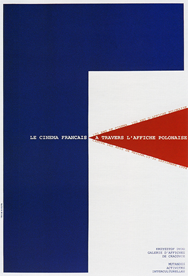
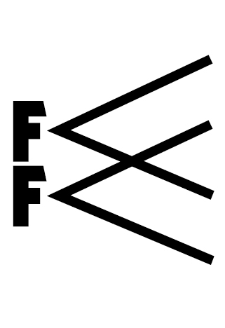
Que ce soit dans l’affiche, la conception des pages internes d’un livre ou dans le cadre d’une identité visuelle, l’idée de quelque chose d’inévitable, d’évident, de «l’essence de la chose» semble constamment présente. Est-ce une volonté consciente lors de la définition du problème de communication ou la conséquence d’un désir de réduction formelle qui mène à ce type de solutions visuelles?
WP
L’aspect inévitable, d’évidence, de tenter d’atteindre l’essence du problème est la conséquence d’un travail intense, d’un effort intellectuel considérable. Le minimalisme n’est pas mon but en tant que tel. C’est un moyen permettant d’arriver à la conclusion visuelle, à la résolution d’un problème de communication.
Vos productions des dix dernières années semblent refuser systématiquement l’illusion de la profondeur: on a l’impression que vous avez la volonté de montrer que l’affiche demeure avant tout une simple feuille de papier, une surface plane avec des motifs imprimés qui eux aussi refusent de jouer une illusion de la perspective (photographique ou dessinée). Est-ce une décision consciente, un basculement progressif?
WP
Je ne m’assis jamais à ma table de travail en me disant et en planifiant que mes affiches vont prendre une telle direction. Mais il est vrai que cette disparition effective de la profondeur est arrivée progressivement dans mon travail, simplement en tentant de manière consciente de concevoir chaque affiche avec le minimum de moyens visuels.
Vous avez dessiné un grand nombre de logotypes et de pictogrammes pour des programmes d’identité visuelle; il semble que ce niveau de réduction et de synthèse visuelle est aussi appliqué dans la manière dont vous abordez la conception d’affiches [3 & 4]. Quelle relation faites-vous entre ces différentes échelles d’intervention?
WP
Il est vrai que je ne fais pas de distinction entre la conception d’une affiche et d’un logotype: les deux tâches requièrent un maximum de synthèse visuelle et de simplicité.
Dans quel contexte sont montrées les affiches que vous dessinez, et plus particulièrement de théâtre? Dans certains projets, l’affiche est conçue comme un élément modulaire à répéter [5], quel est l’objectif d’une telle monstration?
WP
Mes affiches de théâtre [6 & 7] sont accrochées à la fois à l’extérieur et dans des espaces protégés: directement sur des murs et palissades dans la rue ainsi que dans certains endroits spécifiquement réservés à l’intérieur des théâtres. Les affiches sérigraphiées sur papier de qualité sont par exemple des éditions limitées conçues pour être montrées à l’intérieur uniquement. Les projets d’affiche basés sur une répétition du motif ont une règle simple: l’affiche doit fonctionner et informer aussi bien lorsqu’elle est accrochée seule que lorsqu’elle est présentée sous la forme d’une séquence. À mon sens, quand les affiches sont montrées répétées dans une telle séquence elles gagnent une nouvelle dimension et un supplément de sens. Idéalement dans ce cas-là je tente aussi de concevoir la manière dont les affiches vont être montrées dans l’espace public mais dans la pratique c’est plutôt selon le bon vouloir des organisateurs.
Pouvez-vous dater dans votre travail vos premières affiches intégralement typographiques?
WP
Parfaitement. «Polnische Plakate» [5] était ma première affiche purement typographique. Cette date de publication est significative — l’affiche a été produite en 1990. C’était environ un an après la fin officielle du communisme en Pologne. C’était un changement épique, je voulais représenter cela dans mon propre travail: j’ai remplacé la photographie noir & blanc par la typographie et des blocs de couleurs. Cette affiche a aussi été ma première production réalisée avec l’aide d’un ordinateur. Les frontières polonaises s’étaient finalement ouvertes et nous étions enfin capables d’avoir nos premiers ordinateurs, un nouvel outil que j’ai découvert avec impatience.
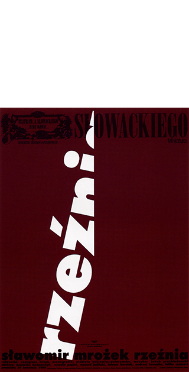
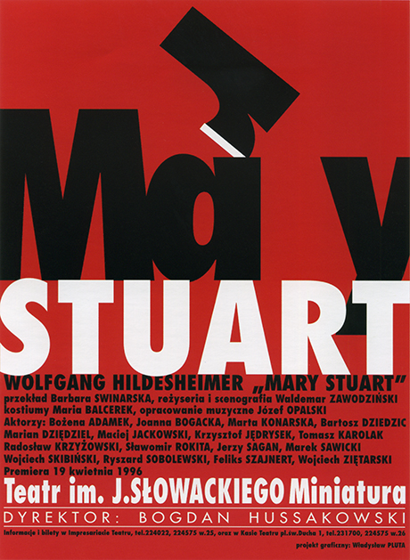
Vous utilisez souvent la lettre typographiée à deux niveaux: la représentation du signe alphabétique conventionnelle et le même signe pour ses qualités figuratives schématiques. On pourrait parler ici de typographie en tant qu’image, mais ce jeu visuel n’est pas toujours possible et fortement lié au contexte de projet et aux différents titres à mettre en espace [6, 7, 8, 9 & 10]. Comment rester dans ce minimalisme typographique par exemple lors de l’évocation de grands classiques du théâtre, domaine dans lequel vous avez particulièrement travaillé?
WP
Je ne fais pas de distinction entre les grands classiques du théâtre et des auteurs moins connus — je ne donne jamais une hiérarchie ou un ordre d’importance entre mes différents projets. Durant ma carrière professionnelle je ne me rappelle pas avoir eu de problèmes à trouver une idée visuelle parmi la forme des lettres, je ne suis jamais à court d’idées. Ce processus de chercher un message dans la forme même de la lettre est ce que je préfère [11], ce que vous appelez ici «jeu visuel» est comme résoudre un puzzle. La composition finale n’est pas toujours parfaitement lisible ou compréhensible instantanément mais je donne toujours au regardeur / spectateur un indice ou une clé de lecture au second plan permettant de comprendre parfaitement le sens de l’affiche.
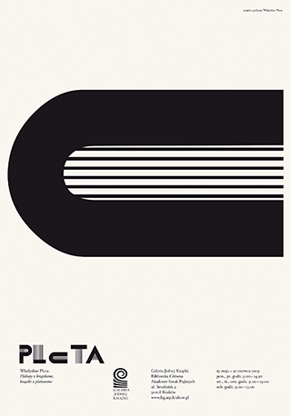
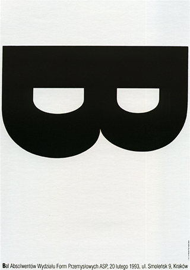
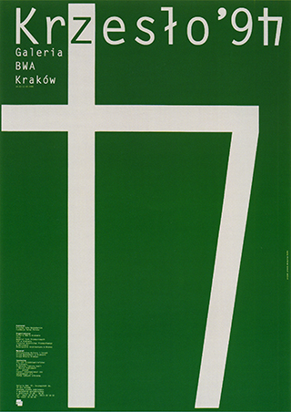
Cette clé de lecture que vous proposez systématiquement lorsque le motif principal de l’affiche est ambivalent ou trop abstrait, prend généralement la forme d’un titrage typographique rejouant le même motif à plus petite échelle révélant le sens [12, 13 & 14]. Un commentaire sur cette idée ou traitement visuel récurrent?
WP
Récemment j’ai eu à faire une présentation publique de mon travail. Après la conférence, je fus approché par un homme qui se présenta comme ingénieur. Il me congratula pour mes méthodes de travail et dit: «Toutes les affiches contiennent une grande idée, ce qui demande un certain effort pour les comprendre. Mais si quelqu’un ne peut pas voir l’idée, il est quand même capable de lire l’affiche en entier».
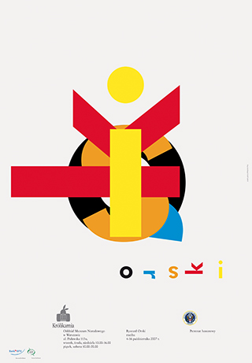
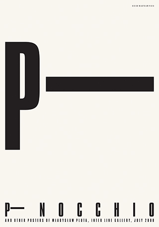
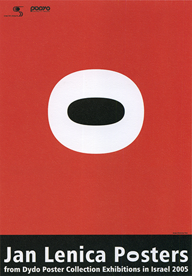
Dans certaines de vos premières affiches nous pouvons avoir l’impression d’être face à une approche de type affiche-objet (ou «SachPlakat») développée par Lucian Bernhard à Berlin au début du 20e siècle, mais dans un dialogue photographie / typographie. Est-ce l’une de vos références et est-ce une démarche consciente? Quel est votre regard sur ces premières productions aujourd’hui et votre recherche sur la simplification?
WP
Si j’avais à mentionner un seul courant qui m’ait influencé, se serait la méthode «SachPlakat». Il me semblait naturel à l’époque de mes études de communiquer à travers des représentations d’objets seuls accompagnés de simples titres typographiques. Avec le recul je pense aujourd’hui que c’est très probablement lié à l’environnement de la Faculté de Design Industriel. J’ai toujours été entouré par des designers d’objets et leurs productions. Mon but était d’être capable de raconter une histoire avec les quelques éléments que j’avais dans les poches. L’agrandissement (photographique) d’objets du quotidien m’a permis de concevoir des affiches plus puissantes, plus efficaces.
Comment arrivez-vous à amener le commanditaire à accepter des partis pris aussi radicaux et minimalistes? Vous contacte-t’on plus spécifiquement pour ce type d’écriture graphique? L’évidence de l’idée visuelle suffit-elle?
WP
Il est vrai que certains commanditaires m’approchent délibérément pour mon style minimaliste. Bien que radical, celui-ci semble fonctionner avec succès dans le contexte actuel marqué par un «bruit» visuel important. Mes affiches simples et efficaces résistent bien aux rues encombrées, leur impact est apprécié. D’autres commanditaires reviennent pour la conception d’un livre simplement car ils ont observé une augmentation des ventes. C’est plus facile pour moi aujourd’hui, avec des années d’expérience — le niveau auquel j’ai à faire des compromis est beaucoup plus haut qu’un designer plus jeune.
Vous avez enseigné durant la majeure partie de votre carrière au sein d’un département intitulé «Design Industriel» alors que vous intervenez principalement dans le domaine culturel. L’articulation réelle avec le monde industriel est toujours complexe, quelles sont les conditions de cette relation en Pologne? Les décideurs et la société en général montrent-ils un intérêt pour la question du design ou la sphère culturelle demeure un espace protégé, seul lieu possible où faire émerger des formes intéressantes?
WP
J’ai effectivement consciemment basculé dans le champ culturel. Quand j’ai commencé ma carrière les relations concepteur / commanditaire étaient extrêmement difficiles et pas seulement pour des raisons politiques et le contexte de l’ère communiste. Le monde de la culture offrait un niveau de relations interpersonnelles complètement différent qui correspondait je pense à ma personnalité. De nos jours je vois de très nombreux studios de design graphique qui coopèrent directement avec l’industrie. La qualité des relations avec des décideurs industriels s’est largement améliorée, ce qui a produit des projets innovants très intéressants. Néanmoins, travailler au sein du champ culturel a été probablement le meilleur choix pour moi.
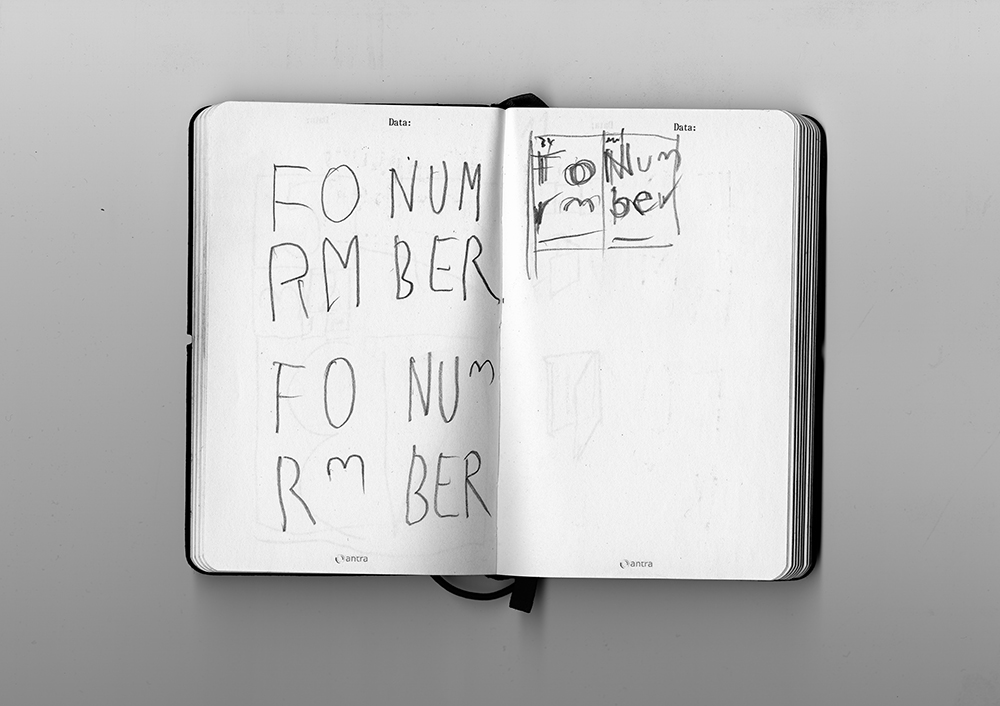
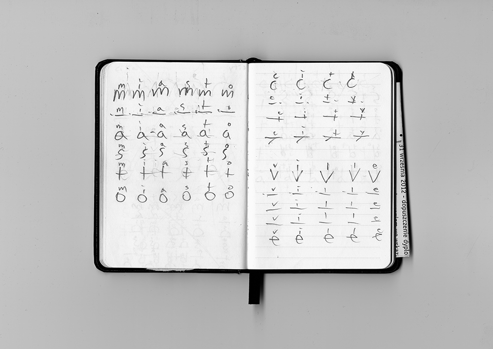
Un observateur attentif peut remarquer qu’aujourd’hui, malgré une conception vectorielle sur écran, vous ne modifiez jamais la forme de la lettre dans vos affiches ou couvertures de livres, y-a-t-il une corrélation avec l’usage de lettres en bois pour l’affiche à vos débuts?
WP
J’essaye de ne jamais modifier ou déformer la forme des lettres avec lesquelles je travaille pour deux raisons. Premièrement je respecte le travail du dessinateur de caractères derrière les lettres. Deuxièmement, quand je doute sur comment travailler avec une forme particulière de lettre, j’essaye effectivement de penser et d’agir comme si c’était une lettre en bois (caractère d’impression en bois pour les affiches et titres de grande taille). Cela a toujours fonctionné dans mes productions et donne une intégrité à mon travail.
Avez-vous changé vos habitudes esthétiques avec l’avènement de l’ordinateur?
WP
L’ordinateur est un simple outil comme l’était le processus d’impression au plomb. Néanmoins il faut reconnaître son aide dans le processus de conception et de production, le rendant plus rapide et plus simple. Il y a quelques années j’avais l’habitude d’avoir pour règle qu’un fichier numérique d’affiche à imprimer devait pouvoir être contenu dans une seule disquette (pour information 1,4 Mo). Cela ma permis de garder le contrôle esthétique…
Avez-vous des polices de caractères que vous utilisez de façon récurrente pour vos livres ou pour vos affiches? Achetez-vous des fontes ou travaillez-vous avec des polices systèmes?
WP
J’aime définir des règles du jeu pour moi-même, édicter certaines contraintes personnelles. C’est assez simple — le moins de polices de caractères et de corps de textes j’utilise, le plus aisé est le contrôle de la composition. La conséquence recherchée est une qualité visuelle intemporelle dans la conception. Moins c’est plus. Ainsi j’utilise quasi exclusivement des polices de caractères systèmes données par défaut lors de l’installation de logiciels Adobe. Dans mon cas la difficulté principale fut pendant longtemps de trouver des fontes de qualité avec l’ensemble des accents polonais, depuis peu la technologie OpenType a permis de surmonter cette situation.
Avez-vous tenté des expérimentations pour des projets écran / internet? À quoi ressemblerait une bannière Gif /Jpeg de Władysław Pluta en ligne?
WP
Je me considère moi-même comme un traditionaliste (du papier) et je n'ai pas vraiment de travaux impliquant la question du design graphique à l’écran: je n'utilise l’ordinateur qu'en tant qu’outil. Néanmoins, je reste au courant de l’évolution du monde digital par mon contact permanent avec les étudiants et jeunes designers à travers mon travail pédagogique.
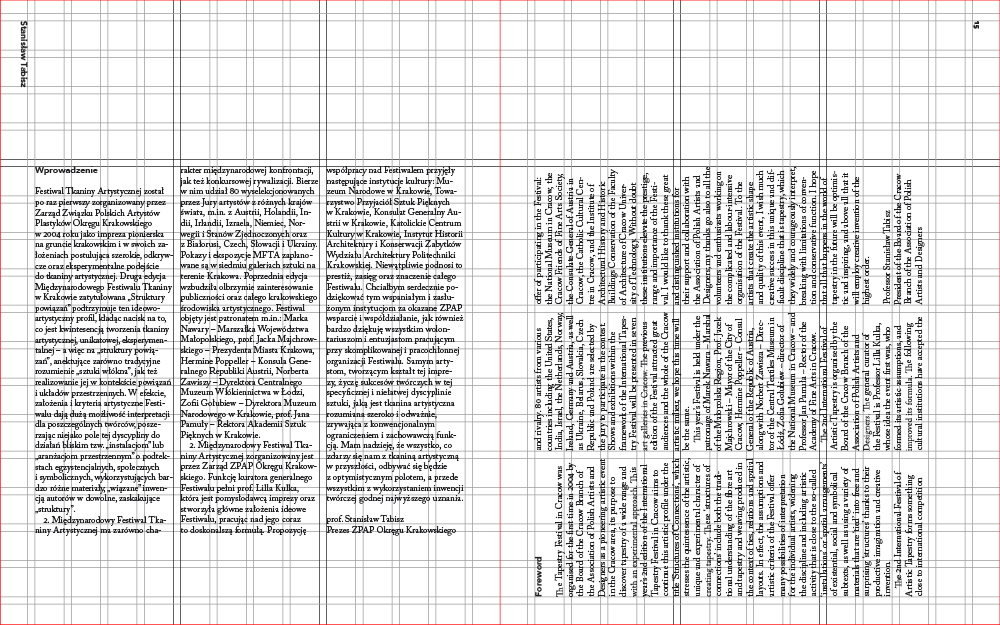
Dans la conception de livre vous semblez donner la priorité à des formats de pages dits «rationnels», construits sur des proportions 2:3 ou 4:5 par exemple. Pourquoi ce choix? L’équilibre visuel est-il plus important pour vous que l’optimisation du papier (par exemple les formats B4 ou B5 permettent de gaspiller le moins de matière possible lors du massicotage)? Les systèmes de proportions tels que la suite de Fibonacci ou le nombre d’or sont des notions importantes pour vous voire même des outils quotidiens?
WP
La proportion 2:3 donne une diagonale de 4, c’est-à-dire un triplet pythagoricien de nombres entiers naturels. Par ailleurs, une double-page issue de pages basées sur la proportion 4:5 donne une proportion de 8:5, très proche du nombre d’or. En effet je favorise souvent le système de suite de Fibonacci et le nombre d’or pour leur équilibre visuel et leur beauté incontestables. J’utilise habituellement ces proportions pour les livres de grand format et les catalogues à partir de la taille de papier B4 (pour information 25 × 35,3 cm). Je n’ignore pas les questions d’optimisation de matière mais je dois aussi prendre en compte les dimensions standards des étagères en Pologne. Pour les ouvrages de lecture ou de plus petit format, j’essaye dans ce cas-là d’utiliser toute la taille de la feuille de papier pour le minimum de perte (de matière lors du massicotage industriel de l’ouvrage). Il y a bien sûr des exceptions, comme par exemple le catalogue Sketches and Essays for the 20 Years of the International Cultural Centre (ouvrage en consultation libre dans l’exposition) où j’ai dû me plier aux standards de publication de cette institution.
Dans les différents catalogues que vous avez conçus, une idée visuelle récurrente semble particulièrement importante: vous essayez toujours de présenter l’iconographie en maintenant les proportions relatives constantes entre les différentes reproductions. Pourquoi un tel choix même si cela conduit parfois ponctuellement à des images très petites à l’intérieur de l’ouvrage?
WP
Tout d'abord, je n’utilise pas toujours cette règle, car parfois il est plus important de montrer la reproduction de l’œuvre la plus grande possible. Mais dès que cela est possible et pertinent, j’essaye au travers de différentes solutions visuelles de rendre la composition intéressante. Je peux par exemple, effectivement appliquer exactement la même réduction à l’ensemble des peintures et dessins d’un artiste au sein d’un catalogue afin d'amener la question de l'échelle entre les différents travaux; ce qui peut avoir son importance dans la lecture et la compréhension du travail de l'artiste.
Dans les ouvrages bilingues que vous concevez, vous parvenez toujours à présenter les textes des différentes langues comme finissant exactement à la même ligne. Pour atteindre cet objectif vous jouez imperceptiblement sur la largeur de colonne du texte. Pourquoi cela est particulièrement important pour vous, est-ce uniquement pour des raisons d’équilibre de la page ou une volonté délibérée de donner symboliquement une importance égale aux différentes langues?
WP
Pour moi, l’égalité «démocratique» des différentes langues est de la plus haute importance. Je pense que les variations de textures typographique entre les colonnes présentant différentes langues (rythme amené par la longueur des mots, ligatures & lettres accentuées spécifiques, etc.) permet une différentiation subtile mais suffisante, il n’est pas nécessaire de créer de décalages sur la longueur des textes. Je joue donc imperceptiblement sur la largeur de colonne du texte pour permettre que celui-ci conserve visuellement toujours le même espace dans la page et ce quelque soit la langue.
Les affiches présentées dans cette exposition ont généralement une dimension qui approche le format industriel standard B1 avec de légères variations. Pourquoi de telles variations, est-ce pour des raisons techniques d’impression ou la manière dont elles sont placardées dans l’espace public?
WP
C’est essentiellement un facteur technique qui concerne principalement mes anciennes affiches. Aujourd’hui encore mes affiches monochromes utilisent l’ensemble du format B1 et mesurent précisément 70 × 100 cm lorsqu’elles ne nécessitent pas un passage au massicot. Par contre, celles qui nécessitent un travail de coupe, car contenant des fonds-perdus, sont majoritairement issues d’un tirage offset en quadrichromie et mesurent plus généralement 68 × 98 cm.
Bibliographie
Krzysztof Lenk, «In Pluta’s Sides», Władysław Pluta Graphic Design, The Bunkier Sztuki Contemporary Art Gallery co-édité avec Rzecz Piekna Fondation, Cracovie, 2003, pp. 13 – 17
—
Stanislaw Tabisz, «The Power of Synthesis — On Władysław Pluta’s graphic design», pp. 6 – 9 et Tomasz Gryglewicz, «Hidden Meanings, Posters by Władysław Pluta», pp. 10 – 17, in Pluta, Pryzmat Gallery et l’Union des Artistes & des Designers Polonais, Cracovie, 2009
—
François Chastanet, «Lire entre les lignes. À propos de Structure of Connection conçu par Władysław Pluta», Back Cover n°2, 2009, pp. 18 – 19
—
Exposition
«Władysław Pluta. L’Évidence Du Signe: Affiches, Livres & Identités»
Espace
Le Bel Ordinaire / espace d’art contemporain Les Abattoirs / allée Montesquieu 64 140 Billère / 05 59 72 25 85 / horaires d'ouverture au public: du mercredi au samedi, de 15h à 19h.
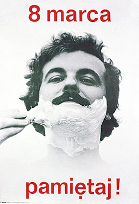